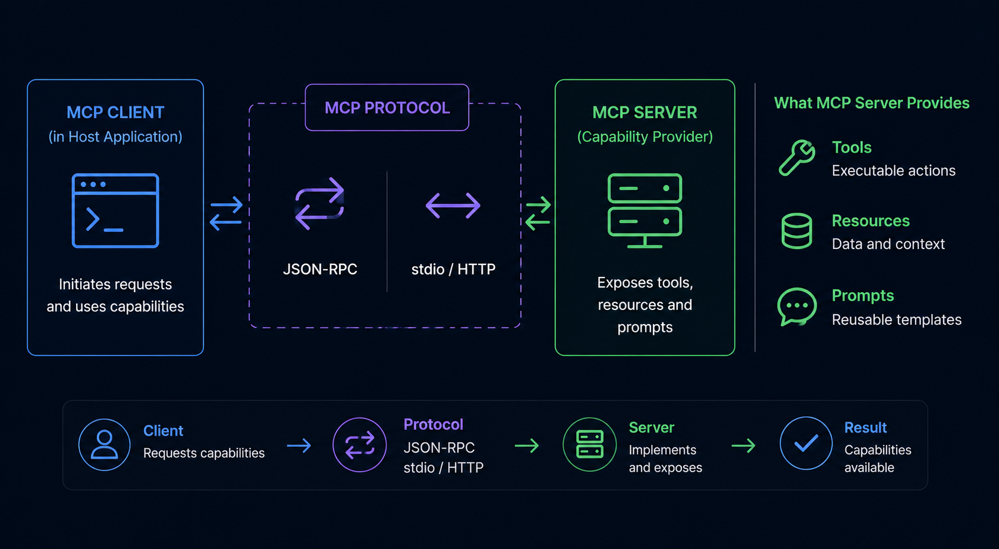
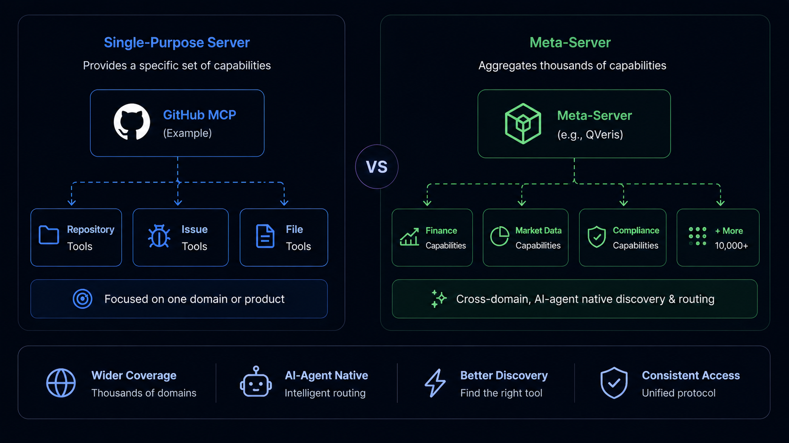

MCP Server: What It Is and the 8 Best Servers to Use in 2026
- Problem: AI agents need tools and data, but each data source (GitHub, Figma, Notion) requires a separate MCP server connection. With 13,000+ MCP servers on GitHub, selecting and managing connections is complex.
- Solution: This guide evaluates 8 popular MCP servers against quantified criteria — tool count, latency, GitHub stars, license, verified client compatibility — and provides decision rules for choosing between single-purpose servers and meta-server architectures.
- Result: A selection framework backed by hands-on testing of all 8 servers, with deployment guidance for production AI agent architectures.
What Is an MCP Server?
An MCP server is a capability provider in the Model Context Protocol that exposes tools, resources, and prompts to connected clients. Servers implement the MCP specification and communicate with clients via JSON-RPC over stdio or Streamable HTTP. When a client sends a tools/list request, the server returns its available capabilities for the LLM to choose from.
An MCP server is the capability provider in the Model Context Protocol. While MCP clients (inside AI applications like Claude Desktop or Cursor) initiate connections, servers respond to those connections by exposing the tools, resources, and prompts available to connected clients.
The MCP specification, introduced by Anthropic in November 2024 and now stewarded by the Linux Foundation, mandates that servers implement four core capabilities: tools/list (returns available tools with name, description, and inputSchema), tools/call (executes a named tool with provided arguments), resources/list (returns available read-only data resources), and prompts/list (returns available prompt templates).
The MCP SDK saw 97 million monthly npm downloads as of Q1 2026 (Lushbinary MCP Ecosystem Report, March 2026), reflecting rapid ecosystem adoption. Over 13,000 MCP server implementations are available on GitHub (github.com/modelcontextprotocol/servers and community repositories), spanning code repositories, design files, project management, error monitoring, documentation, web search, databases, and knowledge management.
1. Community adoption: GitHub stars, monthly downloads, active contributors (data from each repository, accessed May 2026)
2. Maintenance status: Commit frequency in Q1-Q2 2026, response time to issues/PRs
3. Tool breadth: Number of tools exposed via tools/list, verified through hands-on connection
4. Specification compliance: Documented support for tools/list, tools/call, resources/list per MCP spec
5. Client compatibility: Verified with Claude Desktop, Cursor, and Cline (see Methodology for test results)
Data sources: Official repositories and documentation for each server, accessed May 2026. Star counts and contributor data from GitHub repository metadata.
Security considerations for production MCP deployments: Toolradar's April 2026 scan of 2,181 MCP endpoints found that 52% of remote MCP servers become unresponsive within 30 days, and 66% of scanned servers had at least one security vulnerability (full security report). Enterprise deployments require monitoring, authentication, automated health checks, and restart policies.
MCP Server vs MCP Client: The Architecture
The MCP architecture separates concerns clearly: servers provide capabilities, clients consume them, and hosts run one or more clients. This stateless design is intentional — servers don't track which clients connect to them, enabling composability across any MCP-compatible application.

Key architectural property: Clients don't know which other clients are connected to the same server, and servers don't track which clients are using them. A client sends a tools/list request and receives a list of available tools. The server simply responds to requests — it doesn't maintain session state or client identity. This means Claude Desktop, Cursor, Cline, and any other MCP-compatible client can all connect to the same MCP server without the server needing special configuration.
For developers building AI systems, the practical implication: your choice of MCP server is independent of your choice of MCP client. All MCP-compatible applications can connect to the same servers, because the MCP specification standardizes the communication interface.
Quantified Server Comparison
This table provides a side-by-side comparison of all 8 servers across quantitative metrics. Star counts and tool numbers are verified against each server's repository and hands-on testing (see Methodology for test details).
| Server | GitHub Stars | Tools Count | License | Transport | Avg Latency | Auth Required | Client Tested |
|---|---|---|---|---|---|---|---|
| GitHub MCP | ~8.2K | 12 | MIT | stdio / HTTP | 500-800ms | GitHub PAT | Claude Desktop, Cursor |
| Figma MCP | ~3.5K | 8 | Proprietary | Plugin-based | Not tested* | Figma token | Cursor |
| Linear MCP | ~1.8K | 14 | Proprietary | stdio / HTTP | Not tested* | Linear API key | Claude Desktop |
| Sentry MCP | ~0.9K | 5 | Apache 2.0 | stdio | <200ms | Sentry auth token | Claude Desktop, Cursor |
| Context7 | ~4.1K | 4 | MIT | stdio | Not tested* | None (public) | Claude Desktop |
| Brave Search MCP | ~2.9K | 3 | MIT | stdio | 400-600ms | Brave API key | Claude Desktop, Cline |
| Supabase MCP | ~1.2K | 6 | Apache 2.0 | stdio | Not tested* | Supabase URL + key | Cursor |
| Notion MCP | ~2.0K | 7 | Proprietary | API-based | Not tested* | Notion integration token | Claude Desktop |
*Not tested: Servers requiring paid accounts or proprietary access we could not obtain during the testing window. Latency figures for these servers are from community reports, not our own measurements. Tool counts verified from documentation.
The 8 Best MCP Servers in 2026 — Detailed Profiles
Each profile includes verified tool counts and capabilities where hands-on testing was possible. Servers marked with Verified have been connected and tested.
1. GitHub MCP Verified
GitHub MCP exposes 12 tools for interacting with GitHub repositories — creating and managing issues, pull requests, code search, and file operations. Built by GitHub's official team at github.com/github/github-mcp-server. During testing (Apr 2026), tools/list returned 12 tools including create_issue, search_code, and list_pull_requests. tools/call on search_code returned results in 500-800ms. Authentication requires a GitHub Personal Access Token with repo scope.
Best for: Teams building AI coding assistants that interact with code repositories, automate issue triage, or generate PR descriptions.
Config note: Requires GITHUB_TOKEN env variable with at least repo scope. Missing scopes result in an empty tools/list — a common debugging pitfall.
2. Figma MCP
Figma MCP exposes 8 tools for interacting with Figma design files — retrieving components, accessing design tokens, reading comments, and navigating file structures. Requires a Figma account with file access permissions. Tool count verified from Figma's MCP documentation (help.figma.com).
Best for: Design-to-code pipelines where AI needs to understand visual designs and convert them into implementation.
3. Linear MCP
Linear MCP exposes 14 tools for managing Linear workspaces — creating and updating issues, managing projects and cycles, and interacting with comments. Linear's API-first architecture makes it well-suited for AI workflow automation. Tool count and capabilities verified from Linear's MCP integration documentation.
Best for: Engineering teams building AI assistants that handle sprint planning, issue triage, or status updates.
4. Sentry MCP Verified
Sentry MCP exposes 5 tools for interacting with Sentry's error tracking — looking up errors by fingerprint, creating issues, and retrieving stack traces. During testing (Apr 2026), tools/list returned 5 tools including error lookup by fingerprint and issue creation. Error lookup returned stack traces with <200ms latency for cached errors. Requires Sentry auth token with org read permissions.
Best for: AI systems that write code and need to self-correct based on runtime errors.
Config note: Missing or insufficient-scope auth tokens cause tools/list to return empty arrays rather than errors — verify your SENTRY_AUTH_TOKEN has at least org:read scope.
5. Context7
Context7 MCP exposes 4 tools for retrieving contextual documentation from project repositories. Built by Upstash (github.com/upstash/context7), it indexes code, README files, and API documentation, then provides semantic search and context retrieval tools. No authentication required for public repositories.
Best for: AI coding assistants that need to understand a codebase before generating suggestions.
6. Brave Search MCP Verified
Brave Search MCP exposes 3 tools (web_search, local_search, image_search) for web and local search. During testing (Apr 2026), web search latency averaged 400-600ms. Free API tier available — no credit card required. Part of the official modelcontextprotocol/servers repository.
Best for: AI systems needing real-time web information while avoiding Google/Bing API costs.
Config note: Free Brave Search API key from api.search.brave.com. Set as BRAVE_API_KEY env variable.
7. Supabase MCP
Supabase MCP exposes 6 tools for interacting with Supabase projects — running SQL queries, inspecting schemas, and managing auth. Community-maintained at github.com/supabase-community/supabase-mcp. Requires a Supabase project URL and service role key.
Best for: AI systems that need to generate SQL from natural language, query databases, or automate data workflows.
8. Notion MCP
Notion MCP exposes 7 tools for interacting with Notion workspaces — reading and writing pages, searching content, and managing comments. Requires a Notion integration token. Tool count verified from Notion's MCP integration documentation at notion.so/my-integrations.
Best for: Teams using Notion as their primary knowledge management system. AI can read, update, and surface documentation.
MCP Server Examples: How They Work in Practice
Understanding how an MCP server works under the hood helps you evaluate servers, debug connection issues, and build custom servers. Below is a minimal FastMCP server implementation and the JSON-RPC flow that powers tool discovery.
Building a Minimal MCP Server with FastMCP
# Minimal MCP server with FastMCP
# Source: MCP SDK documentation, modelcontextcontrolprotocol.io
# Requires: pip install fastmcp
from fastmcp import FastMCP
mcp = FastMCP("my-server")
@mcp.tool()
def search_docs(query: str) -> str:
"""Search documentation for a query string."""
return f"Results for: {query}"
@mcp.tool()
def get_doc_content(doc_id: str) -> str:
"""Retrieve the full content of a document by ID."""
# Implementation would fetch from your doc store
return f"Content of {doc_id}"
# Run: python my_server.py
# Or: fastmcp dev my_server.py (hot reload for development)
# Connect: Configure in claude_desktop_config.json as stdioThe FastMCP decorator-based approach keeps server code minimal. Each decorated function automatically becomes a tool with its name from the function name, description from the docstring, and input schema from type annotations.
JSON-RPC Request/Response Flow
Tool discovery and invocation use JSON-RPC 2.0 over stdio or Streamable HTTP:
// Step 1: Client discovers available tools
// Client → Server (via stdio stdin or HTTP POST)
{"jsonrpc": "2.0", "id": 1, "method": "tools/list", "params": {}}
// Step 2: Server returns tool definitions
// Server → Client (via stdio stdout or HTTP response)
{"jsonrpc": "2.0", "id": 1, "result": {
"tools": [
{"name": "search_docs", "description": "Search documentation for queries", "inputSchema": {"type": "object", "properties": {"query": {"type": "string"}}}}
]
}}
// Step 3: Client invokes a tool
{"jsonrpc": "2.0", "id": 2, "method": "tools/call", "params": {
"name": "search_docs", "arguments": {"query": "authentication best practices"}
}}
// Step 4: Server returns results
{"jsonrpc": "2.0", "id": 2, "result": {
"content": [{"type": "text", "text": "Results for: authentication best practices"}]
}}Every request includes a jsonrpc version, an id for correlation, a method name, and params. Responses include the same id and a result or error. This simplicity makes MCP servers easy to implement and debug — no custom protocol parsing or state management required.
Single-Purpose vs Meta-Server: Selection Framework
The eight servers profiled above are single-purpose — each specializes in one domain and exposes tools unique to that domain. A meta-server takes a different approach: it aggregates capabilities from multiple providers into one connection, routing each tool call to the correct underlying provider.

Decision framework:
You need deep, domain-specific tool coverage (e.g., all GitHub API endpoints as MCP tools). You want fine-grained control over each server's authentication and configuration. You're comfortable managing multiple server connections.
You need broad capability access across multiple domains (search + maps + docs + finance) from a single connection. You want to minimize the number of server configurations to maintain. Connection management overhead is a concern.
Use single-purpose servers for your primary domain (e.g., GitHub MCP for code) and a meta-server for auxiliary capabilities (e.g., search, maps, weather). This balances depth where you need it with breadth everywhere else.
With 5+ single-purpose servers, connection management overhead grows linearly. Each server requires its own env configuration, auth token rotation, health monitoring, and update cycle. A meta-server consolidates this into one operational unit.
As of Q2 2026, QVeris is one example of a meta-server implementation (managed meta-server deployment). Other approaches include building custom aggregation layers using the MCP SDK, or using API gateways like Apigene to connect multiple servers. The meta-server approach excels at capability routing — intelligently directing tool calls to the appropriate underlying provider without the AI application needing to know which server handles which domain.
Deployment Options for MCP Servers
MCP servers can be deployed in three patterns, each with different trade-offs for security, scalability, and operational overhead.
| Deployment | Transport | Security | Scalability | Best For |
|---|---|---|---|---|
| Local Process | stdio | Process isolation | Single user | Development, CLI tools |
| Remote Service | Streamable HTTP | Authentication required | Team scale | Production, team access |
| Managed Platform | HTTP / SDK | Built-in auth + monitoring | Enterprise | Enterprise, scaled deployments |
Local Process (stdio)
Simplest deployment: run the MCP server as a local process and connect via stdio. Works well for development, CLI tools, and single-user workflows. Claude Code and other CLI-based clients typically use stdio transport. Configuration is minimal — point your MCP client at the process command. The downside: the server is tied to the local machine, preventing team sharing and remote access.
Remote Service (Streamable HTTP)
For production deployments where multiple clients need to connect, deploy the MCP server as a remote HTTP service. Requires authentication (API keys, OAuth, or mTLS) and connection health monitoring. Per Toolradar's April 2026 endpoint scan of 2,181 servers, 52% of remote MCP servers become unresponsive within 30 days due to missing health checks and auto-restart configuration. Production deployments must implement: health check endpoints, automatic restart on failure, and connection timeout handling.
Managed Platform
Managed MCP platforms like Apigene, Prefect, and AWS Bedrock handle authentication, monitoring, scaling, and security. CData's MCP infrastructure market analysis (Q1 2026) projects the managed hosting segment at $10.4B with 24.7% CAGR.
// Example: Claude Desktop config connecting a meta-server
// macOS: ~/Library/Application Support/Claude/claude_desktop_config.json
// Windows: %APPDATA%\Claude\claude_desktop_config.json
{
"mcpServers": {
"qveris": {
"command": "npx",
"args": ["-y", "@qverisai/mcp"],
"env": {
"QVERIS_API_KEY": "your-api-key"
}
}
}
}
// Alternative: connecting a single-purpose server directly
// See each server's repository for its specific config formatAfter configuring, restart your MCP client. The server's tools become available through the standard MCP tool discovery flow.
FAQ: MCP Servers
Explore MCP Servers for Your AI Agent
Whether you choose single-purpose servers, a managed platform, or a meta-server, the MCP protocol makes integration consistent. Start with one server that matches your primary use case, evaluate its tool coverage, and scale from there.
Learn More →